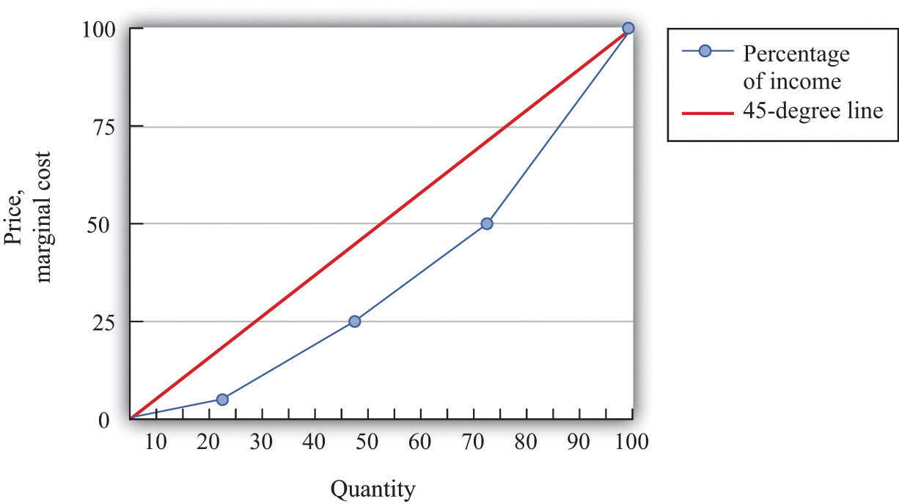
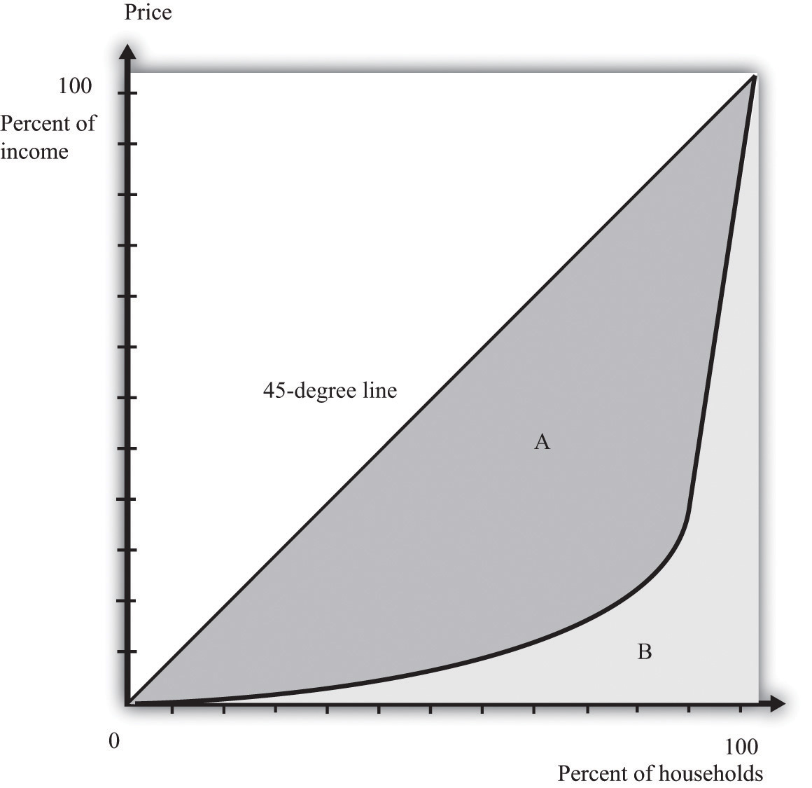
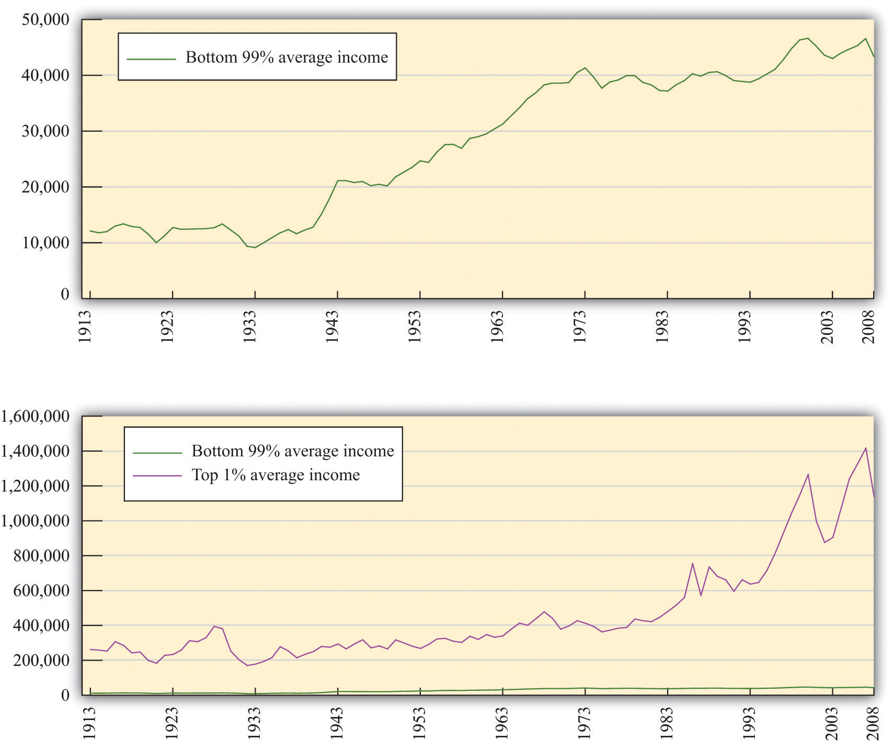

There is no single, simple measure of the amount of inequality in a society. For example, we could study the distribution of consumption, income, or wealth, but each will tell us something different about the amount of inequality in our economy. These differences matter for the debate about inequality and our evaluation of policy.
Suppose you want to document the distribution of income in an economy. You could begin by asking every household its level of income. In many countries, the government already collects such data. In the United States, for example, this investigation is carried out by the US Census Bureau (http://www.census.gov). If everyone on the list had exactly the same level of income, you would conclude that income was equally distributed. If all but one person on the list had zero income and the remaining person had all the income, then you would conclude that income was very unequally distributed. In reality, of course, you would find that different households have all sorts of different levels of income.
The Lorenz curveA graphical representation of the distribution of income in an economy. provides a useful way of summarizing the distribution. It plots the fraction of the population on the horizontal axis and the percentage of income received by that fraction on the vertical axis. We construct a Lorenz curve as follows.
We know that 0 percent of the population earns 0 percent of the income, so the Lorenz curve starts at the origin. We also know that 100 percent of the population earns 100 percent of the income, so the other end of the Lorenz curve is at that point. If income were exactly equally distributed, then any given fraction of the population would earn that same fraction of income. The lowest 28 percent of the population would earn 28 percent of the income, the lowest 74 percent of the population would earn 74 percent of the income, and so on. In this case, the Lorenz curve would be a 45-degree line connecting the two endpoints. The closer the Lorenz curve to the 45-degree line, the more equal the distribution of income.
Table 13.2 "Example of Income Distribution" illustrates how to calculate the points on a Lorenz curve. The table shows four households, ordered by their income levels. The total income earned is $2,000. The lowest household (25 percent of the population) earns 5 percent of the total income because = 5 percent. If there were complete equality, this number would be 25 percent. So the lowest income household accounts for one quarter of the population but only one twentieth of the income. The first and second households together account for 50 percent of the population (see the last column of the table). They earn $500 in total, which is 25 percent of the total income. The first, second, and third households account for 75 percent of the population and 50 percent of the total income. Finally, if we look at all four households (100 percent of the population), this group earns $2,000, which is, of course, 100 percent of the total income. This Lorenz curve is illustrated in Figure 13.2 "The Lorenz Curve".
Table 13.2 Example of Income Distribution
| Household | Income Level ($) | Percent of Total Income Earned by Household | Percent of Total Income Earned by All Households with This Income or Lower | Percentage of Population with This Income or Lower |
|---|---|---|---|---|
| 1 | 100 | 5 | 5 | 25 |
| 2 | 400 | 20 | 25 | 50 |
| 3 | 500 | 25 | 50 | 75 |
| 4 | 1,000 | 50 | 100 | 100 |
Figure 13.2 The Lorenz Curve
The more equal the distribution, the closer is the Lorenz curve to the 45-degree line.
We explained that the Lorenz curve coincides with the 45-degree line if there is complete equality. There is also a Lorenz curve for the case of complete inequality—in which a single person earns all the income. In this case, the Lorenz curve lies along the horizontal axis until the final household (that is, at 100 percent on the horizontal axis). At that point, the Lorenz curve lies along the vertical line at the right of the figure because the last person has all the income. Real economies exhibit neither complete equality nor complete inequality; a typical Lorenz curve lies below the 45-degree line and above the horizontal axis.
If we want to compare inequality over time or across countries, then we need something even simpler than the Lorenz curve. For this, we use the Gini coefficientThe area between the Lorenz curve and the 45-degree line divided by the area under the 45-degree line., which is equal to the area between the 45-degree line and the Lorenz curve divided by the area below the diagonal. Figure 13.3 "The Lorenz Curve and the Gini Coefficient" shows how the Gini coefficient is related to the Lorenz curve.
Figure 13.3 The Lorenz Curve and the Gini Coefficient
The Gini coefficient is calculated as the area between the Lorenz curve and the 45-degree line divided by the area under the 45-degree line—that is, it equals A/(A + B).
If the Lorenz curve is exactly the same as the 45-degree line, then the Gini coefficient is zero. In this case, there is no area between the Lorenz curve and the 45-degree line. At the other extreme, if the Lorenz curve coincides with the horizontal axis until the final household, then the area above the Lorenz curve and the area below the diagonal are exactly the same. With complete inequality, the Gini coefficient is one. A higher Gini coefficient therefore means more inequality in the distribution of income.
We now use the Gini coefficient and other data to look at some facts about the distributions of income and wealth.
Table 13.3 "Household Income by Quintile" presents data from the US Census Bureau on the distribution of various measures of income from 2003 to 2005. There are three measures of income given for each of the three years:
This table tells us how government redistribution affects the link between wage earnings and income.
Table 13.3 Household Income by Quintile
| Quintiles | Market Income | Postinsurance Income | Disposable Income | ||||||
|---|---|---|---|---|---|---|---|---|---|
| 2003 | 2004 | 2005 | 2003 | 2004 | 2005 | 2003 | 2004 | 2005 | |
| Lowest | 1.5 | 1.5 | 1.5 | 3.3 | 3.3 | 3.2 | 4.6 | 4.7 | 4.4 |
| Second | 7.5 | 7.4 | 7.3 | 8.9 | 8.6 | 8.6 | 10.3 | 10.3 | 9.9 |
| Third | 14.5 | 14.1 | 14.0 | 14.8 | 14.5 | 14.3 | 15.8 | 16.1 | 15.3 |
| Fourth | 24.2 | 23.6 | 23.4 | 23.5 | 23.0 | 22.8 | 23.8 | 24.0 | 23.1 |
| Highest | 52.5 | 53.4 | 53.8 | 49.6 | 50.6 | 51.0 | 45.6 | 44.9 | 47.3 |
| Gini coefficient | 0.492 | 0.496 | 0.493 | 0.446 | 0.449 | 0.447 | 0.405 | 0.400 | 0.400 |
Source: US Census Bureau, Current Population Survey, 2004–2006 Annual Social and Economic Supplements.
These measures of income for each of the three years create the columns of the table. The rows of the table are quintiles (fifths) of the population. As in the construction of the Lorenz curve, the population is ordered according to income. This means the first quintile is the bottom 20 percent of the population in terms of income. The fifth quintile is the top 20 percent of the population in terms of income. To see how these quintiles are created, imagine taking 100 people and arranging them by their income, starting at the lowest level. Then create five groups of 20 people each where the first 20 people in the income distribution are in the first group, the second 20 in the income distribution are in the second group, and so on. Each group of 20 is a quintile of this population.
For each measure of income and for each year, there is an entry in the table showing the fraction of income in that year for a particular quintile. For example, looking at disposable income in 2004, the third (middle) quintile had 16.1 percent of the disposable income, and the highest quintile had 44.9 percent.
There are two striking features of this table. First, there is substantial inequality in the US economy. Looking at market income, the lowest 20 percent of the population receive about only 1.5 percent of the total market income. Contrast this with the highest quintile, which receives more than 50 percent of the total market income. This inequality is reflected in the Gini coefficient of about 0.49. If we look at the very top of the income distribution, the inequality is even more marked: the top 5 percent of the population in 2005 received about 30 percent of income after taxes and transfers, and the top 1 percent received about 16 percent of income.These figures come from Congressional Budget Office, Historical Effective Federal Tax Rates, 1979 to 2005, table 4C, accessed March 14, 2011, http://www.cbo.gov/ftpdocs/88xx/doc8885/Appendix_wtoc.pdf; the definitions of income therefore differ slightly from the US Census Bureau numbers in the table.
Second, the Gini coefficient decreases if we look at postinsurance income relative to market income and at disposable income relative to postinsurance income. This is because transfers represent—on average—a flow from richer to poorer households, and taxes are progressive: they redistribute from the rich to the poor. Government policies bring about some redistribution from richer households to poorer households. That said, there is still substantial inequality even after this redistribution: the lowest quintile receives less than 5 percent of total income, while the highest quintile receives about 45 percent.
Table 13.4 "Gini Coefficient over Time" shows changes in the Gini coefficient over time. (The data are on household incomes and come from the Census Bureau.See http://www.census.gov.) This table shows that inequality in the United States, as measured by the Gini coefficient, has increased steadily over the last few decades. In fact, if you go back to the end of World War II, the end of the 1960s represents a turning point in the income distribution.Thomas Piketty and Emmanuel Saez, “Income Inequality in the United States, 1913–98,” Quarterly Journal of Economics 118 (2003):1, together with their updated data set available at Emmanuel Saez’s faculty home page, http://www.econ.berkeley.edu/~saez/TabFig2008.xls. From 1940 through the 1960s, the income share of the top 10 percent fell from about 45 percent to about 33 percent. But starting in the 1970s, the pattern reversed, so that by 2007, the share of the top 10 percent exceeded 45 percent of total income.
Table 13.4 Gini Coefficient over Time
| Year | Gini Coefficient |
|---|---|
| 2009 | 0.469 |
| 2001 | 0.466 |
| 1997 | 0.459 |
| 1992 | 0.434 |
| 1987 | 0.426 |
| 1982 | 0.412 |
| 1977 | 0.402 |
| 1972 | 0.401 |
| 1967 | 0.399 |
Figure 13.4 "The Distribution of Income from 1913 to 2008" focuses on the top of the income distribution: the top 1 percent. In part (a) of Figure 13.4 "The Distribution of Income from 1913 to 2008", we can see that the real income of the bottom 99 percent of the population increased dramatically between the 1930s and the 1970s, increasing from $9,000 in 1933 to over $40,000 in 1973. (These numbers are adjusted for inflation and are in 2008 dollars.) Income over this period, for this group, grew an average of 3.7 percent per year. Over the next 35 years, the real income of this group hardly grew at all: the average growth rate was 0.2 percent per year. By contrast, the income of the top 1 percent grew only 1.7 percent per year on average between 1913 and 1973 but grew at an average 2.8 percent from 1973 to 2008. As a consequence, the top 1 percent of the income distribution roughly doubled their share of total income over this period.
At the very top of the income distribution, we have the true superstars: rock stars, movie stars, sports stars, top CEOs, and so on. The top 0.01 percent of the population—that is, the richest 30,000 or so people—has seen their share of income increase sevenfold since 1973.
Figure 13.4 The Distribution of Income from 1913 to 2008
(a) The average real income in 2008 dollars for the bottom 99 percent of the population rose substantially between the 1930s and the 1970s but has been much flatter over the past few decades. (b) The top 1 percent has seen substantial income growth in recent decades.
Table 13.5 "Gini Coefficients for Net Worth" looks at wealth data for a cohort of individuals between 1989 and 2001. At the beginning of the study, this group was between 34 and 43 years old.Arthur B. Kennickell, A Rolling Tide: Changes in the Distribution of Wealth in the U.S., 1989–2001 (Washington, DC: Federal Reserve Board, 2003). Wealth is defined as assets minus liabilities. We can see that the Gini coefficients for wealth are considerably larger than the ones we saw earlier for income. There is more equality in income than in wealth.
Table 13.5 Gini Coefficients for Net Worth
| Year | Gini Coefficient |
|---|---|
| 1989 | 0.74 |
| 1992 | 0.75 |
| 1995 | 0.75 |
| 1998 | 0.76 |
| 2001 | 0.78 |
Income is a flow, meaning that individuals receive labor income on a weekly or monthly basis. Wealth is a stock: it is a measure of the assets that an individual or a household has accumulated and is measured at a particular point in time. Wealth comes partly from what people inherit and partly from decisions they make about allocating income between consumption and saving. The table also shows that wealth inequality increased for this group. There are two reasons that this could happen: (1) it may reflect greater inequality as a whole in society and (2) it may be due to inequality increasing as people become older.
The position of a household in the income distribution is not static. A household in the lowest quintile of income one year will not necessarily be there the following year. Households can move up and down in the income distribution. For example, suppose you are fortunate enough to win the lottery or publish a hit song. Your income and thus your position in the income distribution will change quickly. For others without a hit song or luck with the lottery, changes in income can take more time. Perhaps you invest in a college education; after graduation and with a new job, you begin a climb through the income distribution. Bad luck can send you in the opposite direction. If your skills become less valuable, perhaps because of changes in technology, you may find that you have to move from a higher-paying to a lower-paying job, or you may become unemployed. There are many routes from rags to riches and from riches to rags.
One reason for mobility is the changes in income that most people experience in their lifetimes. For most people, the income they earn in their first job after school pays a lot less than the job they retire from. Thus most individuals experience a profile of income over their lifetime that takes them from one part of the income distribution to another. For most people, income also decreases in retirement.
Table 13.6 "Dynamics of Income in the United States" illustrates these dynamics over a five-year period. The top part of the table refers to earnings and the lower part to wealth. The data come from looking at distributions of earnings and wealth in two years: 1989 and 1994.
Table 13.6 Dynamics of Income in the United States
| Measure | 1989 Quintile | 1994 Quintile | ||||
|---|---|---|---|---|---|---|
| Highest | Fourth | Third | Second | Lowest | ||
| Earnings | Highest | 90 | 7 | 2 | 1 | 0 |
| Fourth | 27 | 34 | 30 | 6 | 2 | |
| Third | 9 | 14 | 45 | 25 | 6 | |
| Second | 5 | 6 | 15 | 51 | 23 | |
| Lowest | 5 | 5 | 6 | 17 | 68 | |
| Wealth | Highest | 63 | 26 | 7 | 3 | 2 |
| Fourth | 27 | 45 | 17 | 8 | 3 | |
| Third | 7 | 22 | 45 | 20 | 6 | |
| Second | 3 | 5 | 26 | 45 | 21 | |
| Lowest | 1 | 3 | 5 | 25 | 67 | |
Source: Santiago Rodríguez, Javier Díaz-Giménez, Vincenzo Quadrini, and José-Víctor Ríos-Rull, “Updated Facts on the U.S. Distributions of Earnings, Income and Wealth,” Federal Reserve Bank of Minneapolis Quarterly Review, Summer 2002.
Under “Earnings,” there are five rows indicating the quintiles of the distribution in 1989. Along the top, there are five columns indicating the quintiles of the distribution in 1994. The entries refer to the percentage of people who go from one quintile in 1989 to another quintile in 1994. For example, 27 percent of the households in the second highest quintile in 1989 were in the top quintile in 1994, while 34 percent of the households in the second highest quintile in 1989 stayed there. A similar interpretation is given for the wealth part of the table.
The two parts of this table give a sense of income and wealth mobility through the distribution. If there were no mobility over time, so that households stayed in the same income and/or wealth quintiles), then the table would have 100 on the diagonal and 0 everywhere else. Mobility is indicated by the fact that the numbers along the diagonal are less than 100. From the part of the table referring to earnings, 90 percent of the people in the top income group in 1989 were there in 1994 as well. This means that very high income is extremely persistent. In contrast, only about two-thirds of the people in the lowest income class in 1989 remained in that group in 1994, while 17 percent moved up one quintile. As time passes, those who moved up will then move on to other parts of the income distribution.
Table 13.6 "Dynamics of Income in the United States" shows income and wealth dynamics over a relatively short period of time. It is also useful to look at dynamics across generations, though data are more difficult to obtain. One approach that researchers use over longer periods of time is to follow families. If your family was in the middle income group, we can see the likelihood that you will be in that same income group or in another income group. These dynamics take a longer amount of time because they are affected by things like parents’ choices about the education of their children.
One way to study intergenerational income mobility is to take a group of individuals at a point in time and see how much of their current income can be “explained” by the income of their parents. (Explained is in quotation marks because it is difficult to disentangle the effects of family income from other influences. There are many factors associated with parents’ income, such as the quality of schools and schoolmates, which are correlated with family income.)
One study reports an elasticityThe responsiveness of one variable to changes in another variable. of 0.5 on the relationship between family and child income. This means that if parents’ income is 1 percent higher, the child’s income will be higher by about 0.5 percent. So if two families have an income difference of $100,000, then the prediction is that their children will have a difference of $50,000.The estimate is reported in Thom Hertz, Understanding Mobility in America (American University, Center for American Progress, April 26, 2006). This number is higher for the United States than for almost all the other (mostly European) countries studied. This same elasticity in Denmark is only 0.15, for example.
Toolkit: Section 31.2 "Elasticity"
You can review the concept of elasticity in the toolkit.
The same study also looked at the mobility of families across the quintiles of income. A child whose family was in the middle quintile income had about a 40 percent chance of moving down the income distribution to a lower quintile and a 36.5 percent change of moving up. But 47 percent of the children born to a family in the lowest quintile remained there.
Table 13.7 "Gini Coefficients in Different Countries" presents some evidence on the distribution of income in different countries. There are some significant differences across countries in income inequality. Eastern European countries, such as Hungary and Albania, and Western European countries, such as Sweden and France, have relatively equal distributions of income. At the other extreme, countries like Namibia and Brazil are highly unequal. The United States is about in the middle of these distributions.
Table 13.7 Gini Coefficients in Different Countries
| Country | Gini Coefficient in 2005 |
|---|---|
| Namibia | 0.71 |
| Brazil | 0.59 |
| South Africa | 0.58 |
| Mexico | 0.55 |
| Zambia | 0.53 |
| Argentina | 0.52 |
| Malaysia | 0.49 |
| Philippines | 0.46 |
| China | 0.45 |
| Thailand | 0.43 |
| United States | 0.41 |
| United Kingdom | 0.36 |
| France | 0.33 |
| Russian Federation | 0.31 |
| Ethiopia | 0.30 |
| Albania | 0.28 |
| Hungary | 0.27 |
| Sweden | 0.25 |
Source: “Inequality in Income—Selected Countries and Regions,” United Nations 2005 Human Development Report, figure 3, accessed January 30, 2011, http://hdr.undp.org/en/reports/global/hdr2005.
When we compare countries, remember that some countries have much higher income than others. Looking at Table 13.7 "Gini Coefficients in Different Countries", low-income countries generally seem to have more inequality than high-income countries. This is suggestive of a link between inequality and stages of development. Economist Simon Kuznets suggested that inequality would increase in the early stages of the development process but decrease in later stages. This became known as the Kuznets hypothesis. One story was that as a country grows, the labor force is split between a relatively high-income industrial sector and a relatively low-income agricultural sector. As a country grows, more labor is allocated to the more productive manufacturing sector, and thus inequality is reduced over time.
Whatever the mechanism, world inequality appears to be decreasing significantly. A recent study found that the Gini coefficient for the world had declined from about 0.58 in the 1970s to about 0.51 in the late 2000s.See Maxim Pinkovskiy and Xavier Sala-i-Martín, “Parametric Estimations of the World Distribution of Income” (National Bureau of Economic Research Working Paper 15433, October 2009), accessed March 14, 2011, http://www.nber.org/papers/w15433.pdf.
There are also some fascinating differences in the dynamics of inequality. The decline in inequality in the middle of the 20th century was common throughout much of the developed world. The more recent increase in equality that we have documented in the United States is also visible in some other countries, such as Australia, New Zealand, and the United Kingdom. By contrast, most of Western Europe has not seen the same kinds of increases in inequality.